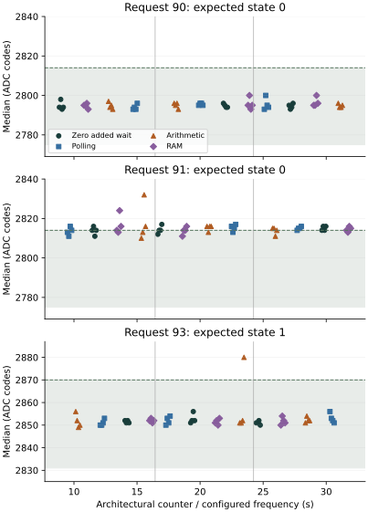
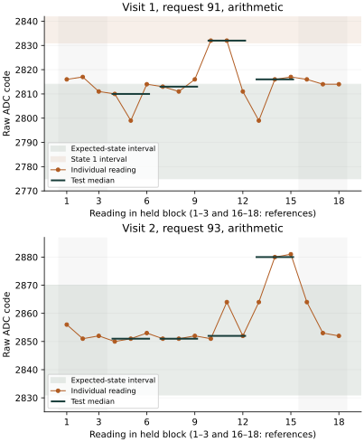

First return: 1 October 2026
Acquisition, operation checks and recording completed; complete recognition was not achieved. All 864 readings, 864 operation records and 7,049 native journal records were recovered. All 324 timed operations met the declared duration criterion. Fixed-bound recognition yielded 120 correct, 23 unresolved and one wrong-state decision among 144 disjoint test medians. None was unavailable. These decisions are reconstructed on the PC from the recorded references and readings; this focused run did not invoke Hyphos creation.
| Request | Expected state | Correct | Unresolved | Wrong state | Fixed interval |
|---|---|---|---|---|---|
| 90 | 0 | 48/48 | 0 | 0 | 2775–2814 |
| 91 | 0 | 25/48 | 22 | 1 | 2775–2814 |
| 93 | 1 | 47/48 | 1 | 0 | 2831–2870 |
Request 91 is a deliberate boundary challenge relative to calibration at request 90. Its median test value was 2814, exactly the state-0 upper bound. Its pre-reference medians ranged from 2811 to 2818 and post-reference medians from 2813 to 2816. Boundary crossings therefore also occurred in the baseline references. This supports limited margin at request 91; it does not by itself explain the larger excursions or establish a calibration change.
| Profile | Request 90 | Request 91 | Request 93 |
|---|---|---|---|
| Zero added wait | 12 / 0 / 0 | 8 / 4 / 0 | 12 / 0 / 0 |
| Counter polling | 12 / 0 / 0 | 5 / 7 / 0 | 12 / 0 / 0 |
| Arithmetic | 12 / 0 / 0 | 5 / 6 / 1 | 11 / 1 / 0 |
| RAM write/read | 12 / 0 / 0 | 7 / 5 / 0 | 12 / 0 / 0 |

Two larger excursions
During visit 1, request 91 under arithmetic produced the triple 2832, 2832, 2811. Its median, 2832, falls inside the fixed state-1 interval despite the requested state being 0. This is a wrong-state assignment, not an unresolved rejection. The first two readings demonstrate that a triple median can preserve a consecutive excursion.
During visit 2, request 93 under arithmetic produced 2864, 2880, 2881. Its median, 2880, exceeded the state-1 upper bound by 10 ADC codes. The pre-reference median was 2852 and the post-reference median was 2853. The preceding held-request return contained the identical raw triple at request 93 before its added operations. Here it occurred during held acquisition in the compact sequence. The earlier long acquisition history and omitted-trigger sequence are therefore not necessary for this observed triple to recur; their possible influence remains unresolved.

Operation timing and recording
The 324 timed windows lasted 2000.019–2000.519 microseconds. Arithmetic work lasted 852.315–855.685 microseconds and RAM work 970.241–973.111 microseconds; polling filled the remaining window. All iteration counts, sums and RAM comparisons passed. Both control readbacks matched each request, all repeated ADC octet pairs agreed, and acquisition and operating-guard statuses were successful. Measured CPU frequency ranged from 1499970445 to 1500028216 Hz; raw thermal status ranged from 67317 to 67331. These diagnostics reveal no reported operation failure; they do not independently establish analog accuracy or conversion freshness.
Acquisition occupied 30.979 seconds, ending at counter-equivalent time 32.047 seconds. The terminal record was formed at 308.639 seconds (5 minutes 8.639 seconds), after all four visit journals completed native write/readback. This supports the 10-minute allowance for this return. Times use the configured 54 MHz counter; the terminal timestamp precedes its own persistence and does not measure the full powered interval.
Two read-only captures matched. The pre-run reader reproduced the preserved analysis exactly. The prior journal and boot-file contents were unchanged; seven boot-volume metadata sectors differed. Six physical-return checks independently verified classification, timing, diagnostic outcomes and rejection of incomplete records or a corrupt operation sum. The preparation's 46 supplied-device checks retain their separate scope.
Question and rationale
Do recognition excursions recur during held-request acquisition, and does bounded arithmetic or RAM activity change their occurrence when elapsed operation time is controlled? The preceding held-request investigation recovered an original state-1 exception before its added operations, a state-0 baseline exception, and a state-0 RAM-profile exception. Complete native operation records accompanied both added exceptions. Those observations establish neither a single failing state nor a causal workload effect.
The earlier run spent most of its powered interval persisting a broad acquisition and Hyphos diagnostic sequence. This investigation replaces that sequence with one reference acquisition and three repeated comparisons. It measures the electrical inputs relevant to subsequent Seigsit creation. Hyphos creation, later content use and carried execution are not invoked in this dedicated test; their earlier results remain separate.
Calibration and repeated conditions
Acquire 36 readings at each of requests 90, 93, 96, 99, 102 and 105, in that order: 216 reference readings. Reconstruct the twelve disjoint triple medians per state using the existing guard of two raw ADC codes and one-third-gap interval rule. Freeze all intervals from these references. Reference overlap invalidates recognition qualification; it does not remove any acquired reading. All request values, counts and ADC codes on this page are displayed in decimal.
Then acquire three visits of 216 readings. Each visit contains all twelve combinations of requests 90, 91 and 93 with the four operation profiles below. Requests 90/91 are assessed against state 0 and request 93 against state 1. Each 18-reading block holds one request: three baseline pre-reference readings, twelve test readings and three baseline post-reference readings. The four disjoint test medians remain the primary estimator. Local references describe movement and never revise the frozen intervals.
| Profile | Operation before guard and ADC | Duration rule |
|---|---|---|
| 0 | Baseline acquisition | No added operation wait |
| 1 | Architectural-counter polling | At least 2 ms from operation start |
| 2 | Sum integers 1 through 1296, then counter polling | Same 2 ms window, including arithmetic |
| 3 | Write/read 1296 private RAM words, compare each value and accumulate their sum, then counter polling | Same 2 ms window, including RAM work |
The first visit uses (90,0), (91,1), (93,2), (90,3), (91,0), (93,1), (90,2), (91,3), (93,0), (90,1), (91,2), (93,3). Visits two and three rotate this list by four and eight positions. Each condition therefore occurs once in every visit and once in each third of a visit. This balances broad position; it does not eliminate all predecessor or carryover effects. Native rows preserve the preceding request, raw reading and status.
The total is 864 readings and 144 held-out medians: 12 medians per request/profile condition across three visits. Immediate RAM readback does not independently qualify DRAM behavior. Counter polling is itself instruction activity. It provides an elapsed-time control, not an electrically inactive processor. Operations execute before the guard, mandatory 1 ms settling and ADC acquisition. Added acquisition wait remains zero; operation-window duration is the controlled difference.
Diagnostics and assessment
For every acquisition, record the actual selected profile, operation start, work completion, padded-window end, iteration count, sum, status, completion marker and tick budget. Arithmetic and RAM success require 1296 completed iterations and sum 840456; RAM compares every readback. Invalid profiles or a mismatched RAM word stop acquisition before the next electrical sample. A failed sample stops later visits and attempts restoration; failed records are neither retried nor replaced.
For profiles 1–3, the budget is the observed counter frequency divided by 500, rounded upward. The duration-match criterion requires work to finish within that budget and final window duration to lie between 2 ms and 2.050 ms, allowing for tick rounding. An overrun disqualifies duration matching for that observation while preserving its electrical outcome. Compare all outcomes and report timing-qualified outcomes separately; no outcome-dependent selection is allowed.
Each observation also retains the existing 72-word row: request/readback, acquisition and conversion-register counters, status, first and repeated ADC octet pairs, operating-guard frequency and raw thermal status, mandatory settling, preceding reading and descriptor identity. The initial reference set and all three visits are persisted as distinct native senary journals with CRC, reservation validation and full readback.
Report three separate criteria: complete acquisition/recording with restoration; operation correctness and measured duration matching; and all 144 test medians correctly recognized using the fixed reference intervals. Report unresolved, wrong-state and unavailable cases separately by visit, request, profile and block position. Retain raw trajectories, margins to both bounds, reference movement, work duration, post-work padding and time to ADC start. Repeated ADC-byte agreement remains a digital-readout check, not independent conversion-freshness evidence.
The compact trial records initialization and electrical checkpoints, writes all four visit journals, then writes a terminal report. A successful terminal report records four completed journal write/readbacks. Its own final readback cannot be established from the returned footer alone. There are 7,049 planned records, versus 65,378 in the preceding full run. All observation and operation words are retained; the reduction comes from the investigation's smaller execution scope.
Interpretation and limits
The first return distinguishes frequent boundary crossings at request 91 from a rarer excursion at nominal request 93. Exceptions at request 91 under every profile prevent attributing all exceptions to added workload. Both larger excursions occurred under arithmetic, but only three blocks per condition were observed and workload history remains a possible confounder. This is a lead for a controlled comparison, not evidence of an arithmetic cause.
The next proposed comparison should concentrate the same short recording path on nominal request 93, retaining zero added wait and contrasting duration-matched polling with arithmetic across balanced positions. Repeated independent boots and preservation of every raw triple would test whether the profile association recurs. A separate request-90/91 boundary comparison can examine acceptance margin without conflating that question with the nominal excursion. Keep the recognition rule fixed; widening it from these test outcomes would conceal the distinction rather than explain it.
Baseline exceptions would support recurrence without the added timed operation. Similar changes across all three timed profiles would motivate investigating elapsed time or shared polling activity. A reproducible difference between a padded workload and the duration-matched polling control would motivate a narrower workload comparison. Inspect those relations within each request and visit; pooled counts alone cannot identify a mechanism. Three blocks per condition within one boot are an initial comparison, not independent reliability trials.
This preparation changes both acquisition history and recording workload relative to the preceding broad experiment. It is a new focused investigation, not an unchanged repeat. Request 93 tests the affected state under held acquisition; it does not recreate the earlier omitted-trigger/trigger sequence. A clean result would leave that history-specific exception unresolved. No calibrated absolute voltage, independent conversion freshness, thermal cause, firmware exclusion or cross-cluster equivalence is inferred.
Execution follows the existing boot entry and timebase binding, then literal SEIGRASM compact-trial instructions, operating supervision, native GPIO/I2C/PMIC operations, bounded work, control restoration, pin release and native SD journaling. The PC copies instruction literals and data and later decodes evidence. No foreign compiler or target language produces the executable path. The existing EEPROM loader, configured entry state and supplied component addresses remain apparatus dependencies.
Preparation and run interval
The initial powered allowance is 10 minutes. The preceding return recorded 65,378 records with its last footer near 46 minutes 49 seconds. Scaling the persistence workload gives approximately five minutes for the compact records, plus acquisition and initialization. Ten minutes is an allowance, not a measured completion time for this new path. The returned journal and terminal report will determine completion and support a shorter subsequent allowance if justified.
Preparation 40C03AC10239 passed all 46 supplied-device checks. The SD image was installed with 6144 verified transfers and two complete matching readbacks while the volume remained locked; the card was ejected. The preserved pre-write image matches the preceding returned capture. The first physical return is recorded above; no successor image has been installed.
Image SHA-256: e2369fde2672e98777847c37f2394adfaab65f70d4c562179b15894c001eac27.
Frozen protocol · Manifest · Validation · SD verification · Evidence index